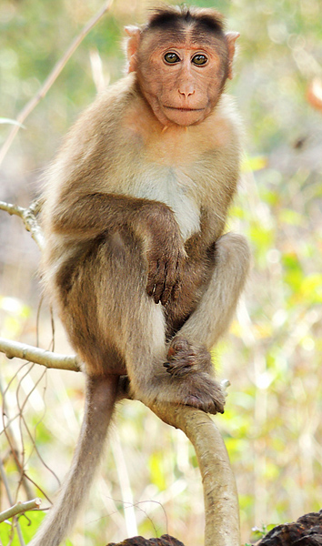

Monkey is a common name that may refer to most mammals of the infraorder Simiiformes, also known as simians. Traditionally, all animals in the group now known as simians are counted as monkeys except the apes. Thus monkeys, in that sense, constitute an incomplete paraphyletic grouping; alternatively, if apes (Hominoidea) are included, monkeys and simians are synonyms.
In 1812, Étienne Geoffroy grouped the apes and the Cercopithecidae group of monkeys together and established the name Catarrhini, "Old World monkeys" ("singes de l'Ancien Monde" in French).[3][4][5] The extant sister of the Catarrhini in the monkey ("singes") group is the Platyrrhini (New World monkeys).[3] Some nine million years before the divergence between the Cercopithecidae and the apes,[6] the Platyrrhini emerged within "monkeys" by migration to South America[7][8] likely by ocean.[9][10] Apes are thus deep in the tree of extant and extinct monkeys, and any of the apes is distinctly closer related to the Cercopithecidae than the Platyrrhini are.
